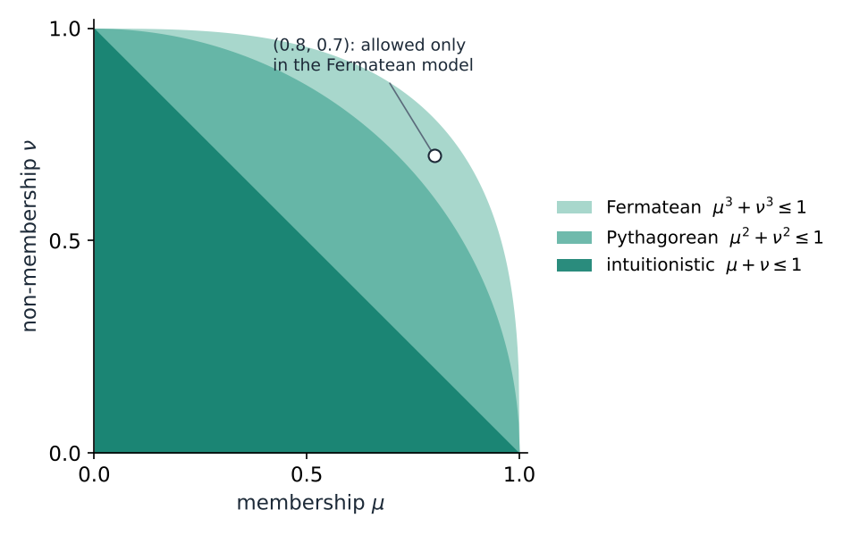
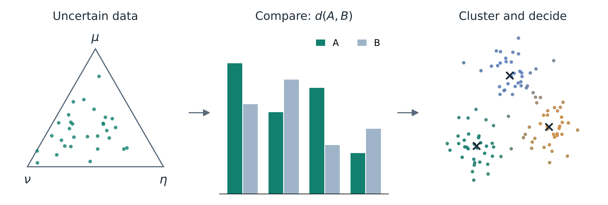
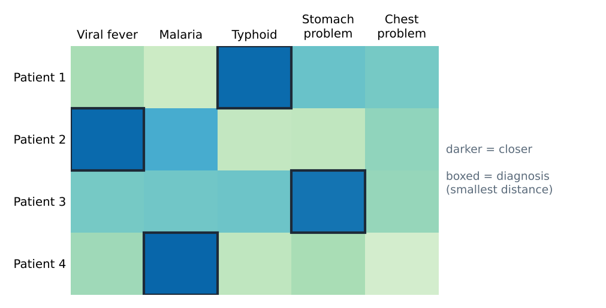
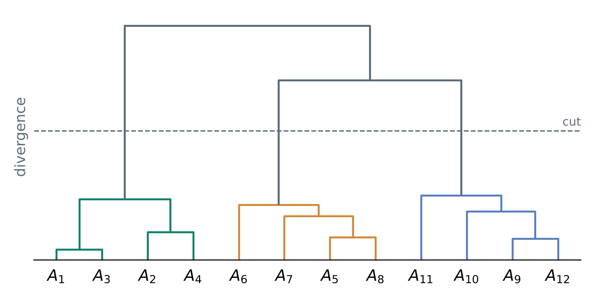
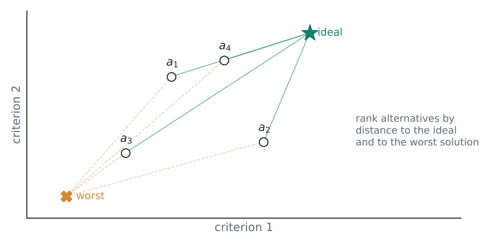

Mathematical Foundations of Machine Learning under Uncertainty
Learning from vague or incomplete information starts with one question: how different are two uncertain objects? During my undergraduate studies I built new ways to answer it for several modern models of uncertainty, proved that they behave as a distance or divergence should, and used them for recognition, diagnosis, clustering, image segmentation and decision making.
Motivation
Real data is rarely clean. A patient's symptoms only partly match a disease, an expert hesitates between two ratings, and a pixel sits on the border between two regions. Fuzzy sets handle this by giving each element a degree of membership. Later models add more detail. Intuitionistic fuzzy sets add a degree of non-membership. Picture fuzzy sets add neutrality. Pythagorean and Fermatean fuzzy sets relax the constraint on membership and non-membership, so they can describe evaluations that the earlier models cannot (figure below). Complex-valued versions add a second, periodic component.

Every richer model needs its own way to compare objects, and that is where the gap was. Some of these models had no distance measure at all. Others had measures that gave counter-intuitive answers, for example treating two clearly different sets as equally close, or that did not satisfy the basic properties of a distance. Any classifier, clustering method or decision rule built on such a measure inherits the problem.
Contributions
Across five papers I proposed new distance and divergence measures, proved their properties, and compared them with existing measures on the cases where the older ones fail.
| Paper | Setting | What I proposed |
|---|---|---|
| [1] 2024 | Picture and interval-valued picture fuzzy sets | α-divergence measures; non-negativity, non-degeneracy and symmetry, with links to known divergences |
| [2] 2025 | Complex picture fuzzy sets | Hellinger-based distance measures; boundedness, symmetry and the triangle inequality |
| [3] 2025 | Complex Fermatean fuzzy sets | New distance measures |
| [4] 2025 | Fermatean fuzzy sets | One parametric divergence operator that contains the Jensen–Shannon divergence, the Hellinger distance and the χ²-divergence as special cases |
| [5] 2025 | Colour images | c-means clustering that learns a weight for each feature automatically |

Applications
A measure is only useful if it leads to better decisions, so each one was tested on concrete tasks. The sketches below show how each task uses a distance or divergence. They illustrate the idea and are not result figures from the papers.
Pattern recognition
Papers [1], [2], [4]
Each known pattern is a fuzzy set, and a new sample is assigned to the closest pattern. The hard cases are patterns that are similar but not identical, which is exactly where earlier measures could not separate them.

Medical diagnosis
Paper [2]
Patients and diseases are both described by symptoms, each with degrees of presence, absence and uncertainty. The diagnosis for a patient is the disease at the smallest distance.

Clustering
Papers [1], [2], [3], [4]
Given a reliable divergence between every pair of objects, hierarchical clustering merges the most similar objects first, and cutting the tree gives the clusters.

Colour image segmentation
Paper [5]
Segmentation is clustering of pixels. Real images are noisy and their regions are not cleanly separated, and some colour features separate regions better than others. Learning a weight for each feature lets the algorithm rely on the informative ones, which makes it more robust to noise.

Decision making
Papers [1], [3], [4]
When experts rate several alternatives on several criteria, often with hesitation, each alternative can be ranked by how close it is to an ideal solution and how far from the worst one.

Conclusion
The lesson that runs through these papers is simple. Before using a measure of similarity or information, decide what properties it must have and prove that it has them. Measures built this way gave consistent answers in all five kinds of tasks, including the cases where older measures did not.
The same question shapes my current research. In single-cell representation learning I ask how much biological signal a learned representation actually recovers, which again comes down to choosing and justifying the right measure of information.
Papers
- S. Zhu, Z. Liu, G. Ulutagay, M. Deveci, D. Pamucar. Novel α-divergence measures on picture fuzzy sets and interval-valued picture fuzzy sets. Engineering Applications of Artificial Intelligence, 2024.
- S. Zhu, Z. Liu, S. Letchmunan, G. Ulutagay, K. Ullah. Novel distance measures on complex picture fuzzy environment: applications in pattern recognition, medical diagnosis and clustering. Journal of Applied Mathematics and Computing, 2025.
- Z. Liu, S. Zhu, T. Senapati, M. Deveci, D. Pamucar, R. R. Yager. New distance measures of complex Fermatean fuzzy sets with applications in decision making and clustering problems. Information Sciences, 2025.
- Z. Liu, S. Zhu, et al. A unified parametric divergence operator for Fermatean fuzzy environment and its application in machine learning and intelligent decision-making. Computer Modeling in Engineering & Sciences, 2025.
- S. Zhu, Z. Liu, S. Letchmunan, H. Qiu. Auto feature weighted c-means type clustering methods for color image segmentation. Engineering Applications of Artificial Intelligence, 2025.